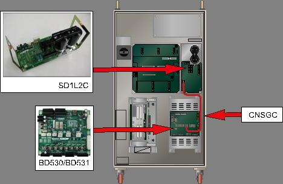
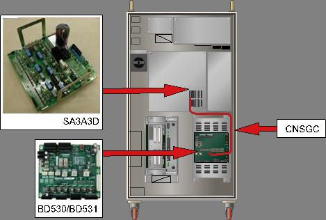
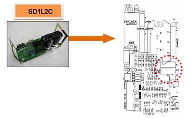
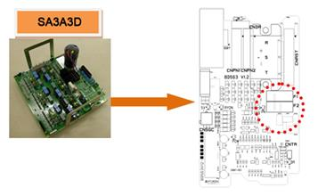
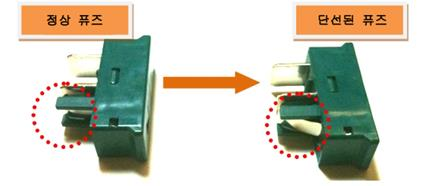
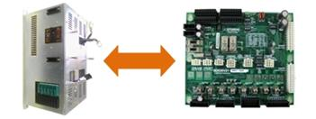
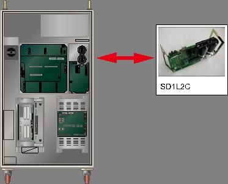

1.1.8.1. 개요
서보 구동장치에 공급되는 3상 전압(R, S, T)에 과전압 또는 서지전압의 유입으로 인해 서지보호기에 과전류가 흘러서 보호용 퓨즈가 단선되었습니다.
1.1.8.2. 원인 및 점검방법
|
(1) 서보 구동장치의의 퓨즈를 점검하여 주십시오. n 서보 구동장치의 퓨즈 단선 여부를 확인하십시오.
<퓨즈가 단선되지 않은 경우> (2) 과전류 에러 검지 관련 부품을 점검하여 주십시오. n CNSGC 케이블을 교체한 후 점검하여 주십시오. n BD530/BD531 보드를 교체한 후 점검하여 주십시오. n 서보 구동장치를 교체한 후 점검하여 주십시오.
<퓨즈가 단선된 경우> (3) 전원 관련 부품을 점검하여 하십시오. n 제어기 내부 3상 전압을 점검하여 주십시오. n 제어기 입력 3상 전압을 점검하여 주십시오. n 서보 구동장치를 교체한 후 점검하여 주십시오. |
(1) 서보 구동장치의 퓨즈를 점검하여 주십시오.
AMP의 과전류(over-current) 에러는 입력되는 3상 전압이 사양을 초과하는 경우에 다이오드 모듈에서 검지합니다. 발생된 에러는 CNSGC 케이블을 통하여 BD530/BD531보드에서 처리합니다.

(a) Hi5-N00 제어기

(b) Hi5-N30 제어기
그림 1.38 AMP 과전류 발생 에러 관련 부품 배치

(a) Hi5-N00 제어기 (SD1L2C)

(b) Hi5-N30 제어기 (SA3A3D)
그림 1.39 AMP 과전류 검지 퓨즈 위치

그림 1.40 AMP 과전류 검지 퓨즈의 단선 형태
(2) 과전류 에러 검지 관련 부품을 점검하여 주십시오.
퓨즈가 단선되지 않은 상태에서 AMP과전류 에러가 발생하는 경우는 CNSGC, BD530/BD531 또는 서보 구동장치 불량입니다. 매뉴얼의 제어기 구성을 참고하여 각 부품별로 점검하여 주십시오.
n CNSGC 케이블 교체 점검
CNSGC 케이블을 정상품과 교체하여 에러가 발생하지 않으면 케이블의 접속 불량입니다. CNSGC 케이블을 정상품으로 교체하여 사용하시기 바랍니다.
n BD530/BD531 교체 점검
BD530/BD531을 정상품과 교체하여 에러가 발생하지 않으면 해당 보드의 불량입니다. BD530/BD531을 정상품으로 교체하여 사용하시기 바랍니다.

그림 1.41 BD530/BD531의 교체
n 서보 구동장치의 교체 점검
AMP의 과전류 에러를 검지하는 모듈은 다음과 같습니다.
Ø Hi5-N제어기 : 중형용 SD1L2C, 소형용 SA3A3D
현재 사용 중인 제어기의 구성품을 확인하신 후 점검하시기 바랍니다. 정상품과 교체하여 에러 재발 여부를 확인하여 주십시오.

그림 1.42 과전류 에러 발생시 모듈 교체
(3) 전원 관련 부품을 점검하여 주십시오.
과전류 에러는 서보 구동장치에 3상 AC 220V 를 초과하는 과전압 또는 서지 전압이 입력되는 경우에 발생됩니다. 높은 입력 전압은 서지 보호기를 흐르게 되며, 직렬로 연결된 퓨즈가 단선되면서 에러가 발생합니다.
n 입력 전압 점검
AC 242V이상의 전압이 서보 구동장치에 입력되는 경우에는 모터 On 하는 순간에 과전류 에러가 발생할 수 있습니다. 측정된 입력 전압이 허용 범위를 초과하는 경우에는 제어기 입력 전압 점검 절차와 제어기 내부 3상 전압 점검 절차에 따라 전압을 점검하시기 바랍니다.
Ø 서보 구동장치 입력 전압 사양: 3상 AC 220V
Ø 모터 On 시 허용 범위: 198V ~ 242V
n 서보 구동장치의 교체 점검
AMP의 과전류 에러를 검지하는 모듈을 교체하여 에러 재발 여부를 확인하여 주십시오. 모듈 내부 회로의 고장으로 인하여 에러가 지속적으로 발생할 수 있습니다.
Ø Hi5-N제어기
l 중형 로봇용 다이오드 모듈 : SD1L2C
l 소형 로봇용 서보 구동장치 : SA3A3D